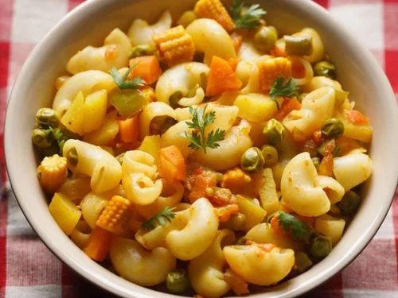

Macroni Recipe

Description
Macaroni, known in Italian as maccheroni, is a pasta shaped like narrow tubes. Made with durum wheat, macaroni is commonly cut in short lengths; curved macaroni may be referred to as "elbow macaroni"
Ingredients
- Elbow macaroni
- Butter
- All-purpose flour
- Milk
- Cheddar cheese
- Salt
- Black pepper
- Ground mustard or garlic powder
Steps to make macroni:
- Boil: Cook 1 cup (100g) of elbow macaroni in 4 cups of boiling, salted water until al dente (usually 8 minutes). Drain and set aside.
- Melt: In the same pot, melt 2 tablespoons of butter over medium heat.
- Whisk: Add 2 tablespoons of flour and stir for 1 minute. Slowly whisk in 3/4 cup of milk and cook until the sauce is smooth and thickened.
- Combine: Reduce heat to low. Stir in 1.5 cups of shredded cheese (like cheddar) and 1/4 teaspoon of pepper until melted.
- Toss: Add the cooked macaroni into the cheese sauce, stir well, and serve.
Back to Main page